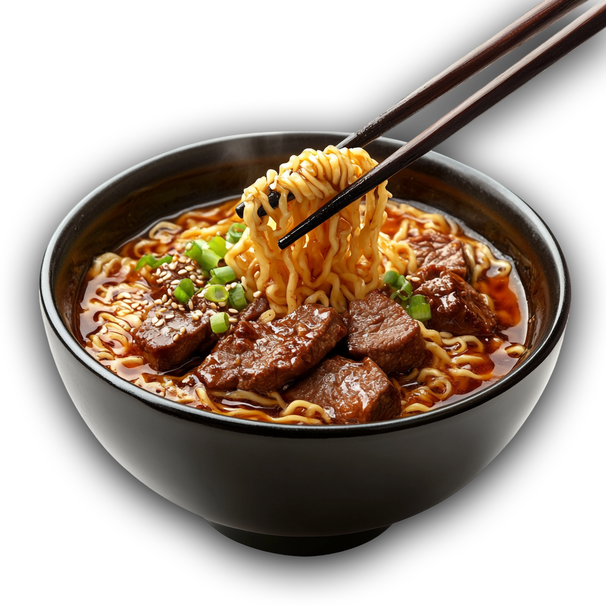
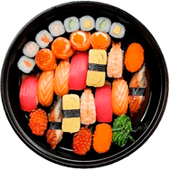
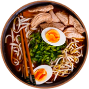
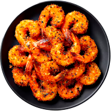
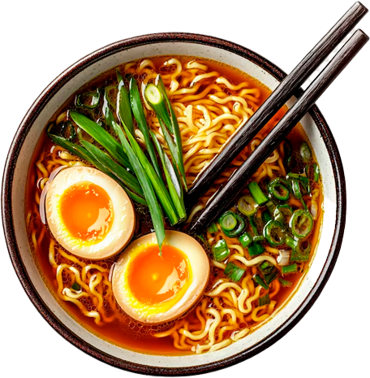
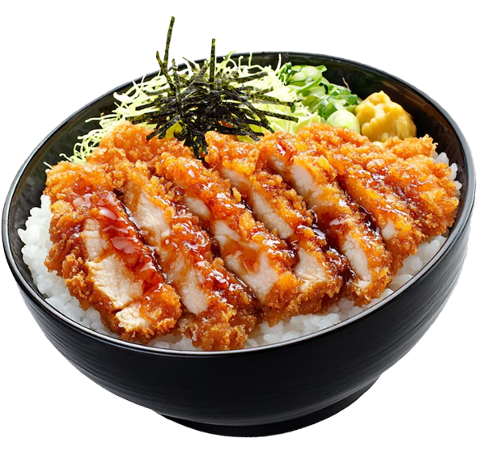
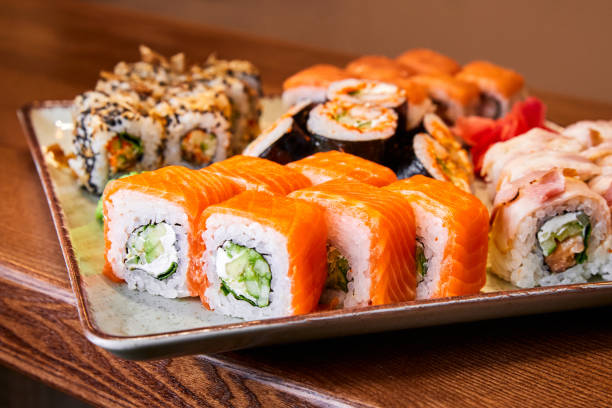
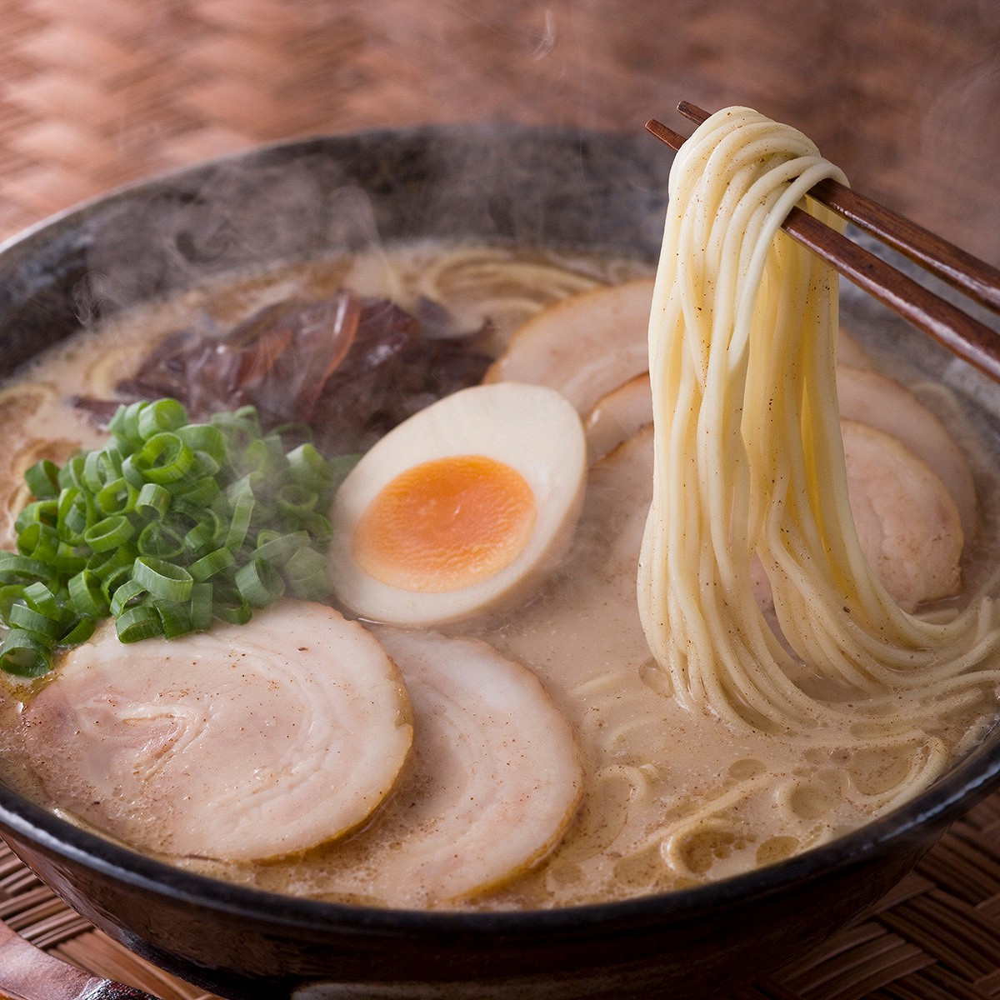
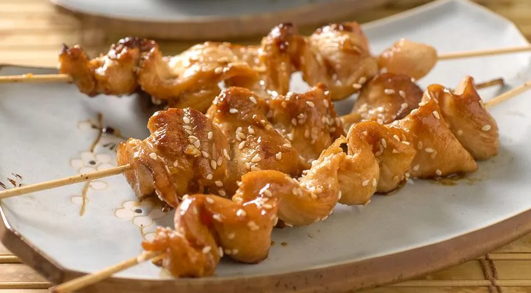

СКИДКА 50%!
СКИДКА НА
ИЗЫСКАННУЮ
ХРУСТЯЩУЮ ТЕМПУРУ
Акция действует только эту неделю
ЗАКАЗАТЬ СЕЙЧАС

Еда - это не просто топливо, это искусство, которое
согревает душу. А наш рамен - лучшее тому
подтверждение.
Лосось, тунец и угорь на рисе, с золотистой икрой и фирменная подача

Разгоняется по остроте с каждой ложкой для тех, кто любит остринку

Воздушная, хрустящая, без лишнего веса, чистый флоу в каждом кусочке

Сытная чаша под соусом унаги - главное блюдо лунной ночи
Сытная чаша под соусом унаги - главное блюдо лунной ночи

Наш ресторан объединяет вековые традиции японской кухни с современной подачей. Каждое блюдо готовится вручную нашими поварами из свежих продуктов, привезённых с уважением к оригинальным рецептам Киото и Осаки.
Наши повара бережно сохраняют аутентичные рецепты, передающиеся из поколения в поколение, сочетая традиции киотской кухни с изысканной современной подачей. Бульон для рамена томится более 12 часов, чтобы раскрыть насыщенный и глубокий вкус.
ЗАКАЗАТЬ СЕЙЧАС
Мы ценим ваше время не меньше, чем вкус наших блюд, поэтому каждый заказ готовится и доставляется с особой точностью и заботой о деталях.
Каждый отзыв для нас - это возможность
становиться лучше и радовать вас
любимыми вкусами Японии снова и снова.
Постоянный посетитель
«Лучший рамен в городе! Бульон невероятно насыщенный, а порции всегда щедрые. Обязательно вернусь еще не раз»
Фуд-блогер
«Атмосфера ресторана переносит прямо в Японию. Суши свежайшие, а подача просто произведение искусства»
Постоянный посетитель
«Заказываю доставку каждую неделю - всегда вовремя и невероятно вкусно. Спасибо за отличный сервис!»
СКИДКА 50%!
Акция действует только эту неделю
ЗАКАЗАТЬ СЕЙЧАССкидка 50%!
ЗАКАЗАТЬ СЕЙЧАССкидка 50%!
ЗАКАЗАТЬ СЕЙЧАССкидка 50%!
ЗАКАЗАТЬ СЕЙЧАСПоследние Статьи
Рассказываем об истории японской кухни, секретах
приготовления и советах, как выбрать лучшие блюда

СУШИРазбираемся, на что обратить внимание при выборе суши и почему свежесть рыбы - главный критерий...

РАМЕНРассказываем, почему настоящий тонкоцу-бульон варится более 12 часов и что делает его особенным...

ЯКИТОРИИзучаем происхождение якитори и почему это блюдо остается любимым уличным лакомством в Японии...